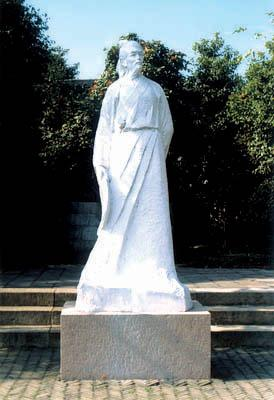

江苏五子棋联赛首场比赛19-20日在江阴举行
#1 江苏五子棋联赛首场比赛19-20日在江阴举行 作者：小丸.net 发表时间：2008-7-16 14:04:48
江苏五子棋爱好者联谊会联赛第一赛季联赛将于7月 19-20号在江阴举行．
江苏联赛是为了煅练棋手的实战能力而设立的．比赛地点设立在美丽富饶的鱼米之乡江阴，江阴拥有着悠久的历史，千古奇人徐霞客就出生在江阴．著名近代藏书家缪荃孙，著名的音乐家刘氏三兄弟（刘天华，刘半农，刘北茂）也出生在江阴，江阴还有全国有名的华西村．江阴举行过两次江苏省内的活动，本次比赛安排在江阴，是所有棋手所理想的．

位于人民东路黄山路底的徐霞客像
时间安排：
19日 上午 报到，安排住宿
下午 12:00-12:15 开幕式，抽签仪式
下午 第一轮,第二轮
晚上 晚餐，游览江阴文明广场，江阴黄山湖公园
20日 上午 第三，第四轮
下午 第五轮 结束后颁发纪念品，然后各自归家
本次比赛采用中国棋院发布的五子棋规则，执行三手交换，五手两打，执行pass权，每方75分钟不读秒，超时判负，比赛需要记谱．记谱不全或者未记谱都作弃权论．
本次比赛采用RenSS积分编排制，首轮比赛进行抽签．
本次比赛场地条件：步行街茶室，安静，场地提供空调，冷热茶水，饮料．
本次比赛住宿条件：双人带空调标准间，每间100元/天
报名费：５０元/人(含场地费，空调费，茶水费＜全在候无限量供应茶水＞)
本次比赛饮食条件：第一天中午人民路步行街KFC餐厅随点 第一天晚餐在致和大厦三楼享用美味的牛排自助餐，第二天中午享用美味可口的台湾套餐－－东池便当．
比赛地点：江阴市人民路步行街致和大厦四楼清风车旅茶吧（步行街ＫＦＣ对面）
出行：江阴东站坐1,19路车，江阴西站坐1,11,19,20,29路到到中医院站下，向东步行到步行街口(100米左右),即可以看到KFC,ＫＦＣ对面即致和大厦．住宿地在致和大厦７楼，晚餐在三楼，比赛在四楼．
报名：任何江苏棋手或者江苏工作，学习的棋手均可参加．
#2 Re:江苏五子棋联赛首场比赛19-20日在江阴举行 作者：南京小飞机 发表时间：2008-7-16 14:30:03
这次肯定是江苏必胜！！！#3 Re:江苏五子棋联赛首场比赛19-20日在江阴举行 作者：雅典娜 发表时间：2008-7-17 10:51:02
江苏内部比赛，一队二队不会去D！等级不高，是推广连株的好机会！
茗弈阁 ATNA
#4 Re:江苏五子棋联赛首场比赛19-20日在江阴举行 作者：百医天使 发表时间：2008-7-17 22:32:45
兄弟们，你们玩好，我是不去了，时间太不巧了#5 Re:江苏五子棋联赛首场比赛19-20日在江阴举行 作者：小丸.net 发表时间：2008-7-19 0:32:08
联系电话：0510-84505880 13771252807
#6 Re:江苏五子棋联赛首场比赛19-20日在江阴举行 作者：雅匪 发表时间：2008-7-19 2:51:08
神往！
#7 Re:Re:江苏五子棋联赛首场比赛19-20日在江阴举行 作者：孤傲 发表时间：2008-7-20 11:12:31
引用：临渊慕鱼，不如退而结网啊~~
原文由 雅匪 发表于 2008-7-19 2:51:08 :神往！
#8 Re:江苏五子棋联赛首场比赛19-20日在江阴举行 作者：雅匪 发表时间：2008-7-21 21:50:49
现在就开始往江苏方向织网争取2018年抵达！#9 Re:江苏五子棋联赛首场比赛19-20日在江阴举行 作者：牛牛 发表时间：2008-7-22 17:27:11
秀丽的景色，美丽的人，华丽的对局——————哇，好绚丽的留言啊